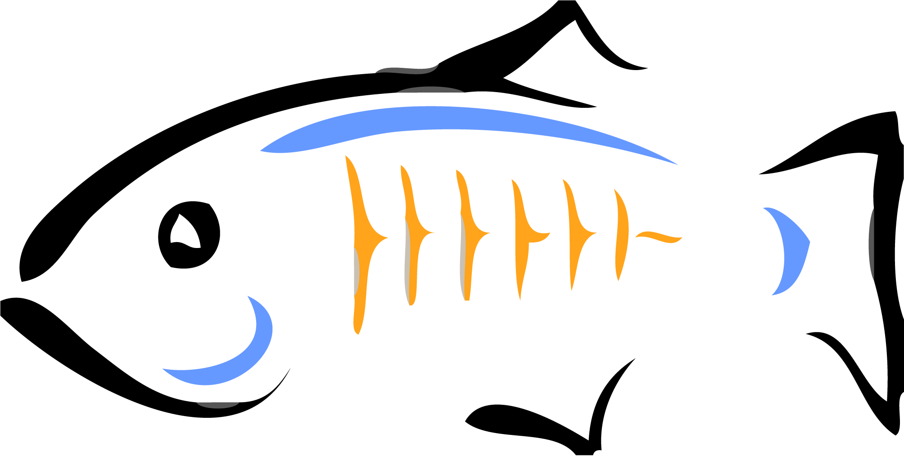

En el transcurso del semestre se realizan varias actividades, en las cuales los estudiantes pueden experimentar lo que les espera en un futuro en el mundo laboral, en estos talleres se busca que el estudiante tome distintos puntos de vista en las distintas fases de un proyecto, y esto permite al estudiante aprender entre varias cosas a montar un servidor o realizar un simulador de un mercado.
